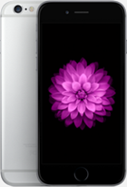
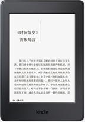
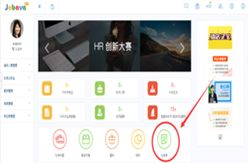
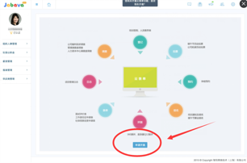
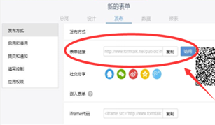

活动奖励：
一等奖：
iphone 7
优胜奖：
Kindle


进入决赛的参赛者将获得 500 睿福利商城兑换券 作为奖励。
参加此次活动的企业和个人皆可享受昊基人力优惠社保代理等服务。
(注：奖金和奖品不可重复累加获得。)
参赛流程：
1、参赛者需使用 Jabava 的云表单模块创建专属表单，并在线发布云表单报名。
云表单开通及报名步骤：
步骤一：登录 Jabava 在操作首页点击【云表单】按钮。
步骤二：打开云表单后，点击【申请开通】按钮。
步骤三：申请开通后，参赛者可以自主创建参赛的云表单作品并
点击【发布】按钮。

步骤四：参赛表单发布后，复制链接，提交参赛信息，完成本次 大赛报名。
还差最后一步即可完成报名
提交参赛信息2、专家组会根据行业特色、应用深度、实用性等标准进行评比，海选出若干优秀表单进入初赛。
3、10 月 15 日至 23 日，进入初赛的优秀表单参与网络在线投票。同时，专家会对入围的表单进行评审打分，
排名前 10 名的参赛者进入决赛。
4、10 月 24 日至 10 月 31 日，进入决赛的 10 名参赛者需提交详细说明 PPT，由专家组评审团最终评选，“一等奖”1 名、“优胜奖”3 名。
5、获奖企业或个人可参加 11 月初在乌镇举办的创新大赛颁奖仪式，同时获得主办方以及 30 家网络媒体的同步媒体宣传。